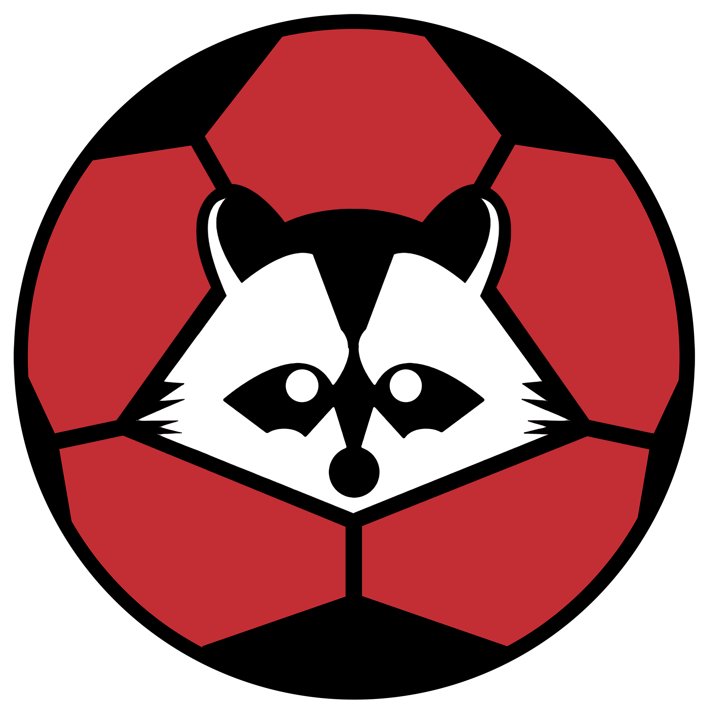
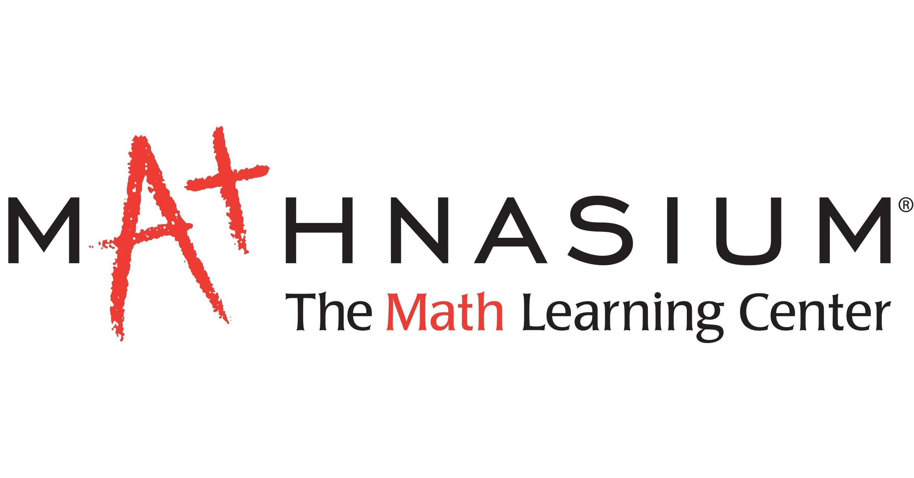

Work Experience

Software Developer
SFU Robot Soccer
Nov 2025 – PresentBurnaby, BC
- Contributed to autonomous robotics software in C++, working on path planning and motion control
- Real-time system synchronization across planning, control, and GUI modules
- Collaborated through Git workflows with AI-focused development
Electromechanical Testing Engineer
Algo Communications
Jan 2025 – April 2025Burnaby, BC
- Programmed and configured firmware on 100+ production PCBs
- Diagnosed and recovered 20+ locked PCBs, reduced rework by 30%
- Firmware validation and diagnostics via UART interfaces and Linux terminals

Math Instructor
Mathnasium
Oct 2024 – Feb 2025Surrey, BC
- Taught math clearly and engagingly to help students understand material
- Encouraged supportive learning environment
- Collaborated to enhance teaching strategies and improve outcomes

Barista
Starbucks Coffee Company
Jun 2022 – Sep 2022Langley, BC
- Ensured prompt and efficient customer service
- Excelled in multitasking in high-pressure environments
- Developed strong communication and attention to detail
Extracurricular & Volunteering
Women in Engineering Club – Dir of External Relations
Jan 2024 – Present | SFU
Designed promotional materials and organized networking events for women in engineering
SFU Events Volunteer
Sept 2023 – Present
Volunteered at OpFair 2024 and ESSS Engineering Competition
Math Peer Tutor
Sept 2022 – Jun 2023
Tutored students in grades 8-12 and language/cultural programs
City of Surrey Volunteer
Jul 2022 – Aug 2023
Supported community development through Partner in Parks and community kitchen initiatives